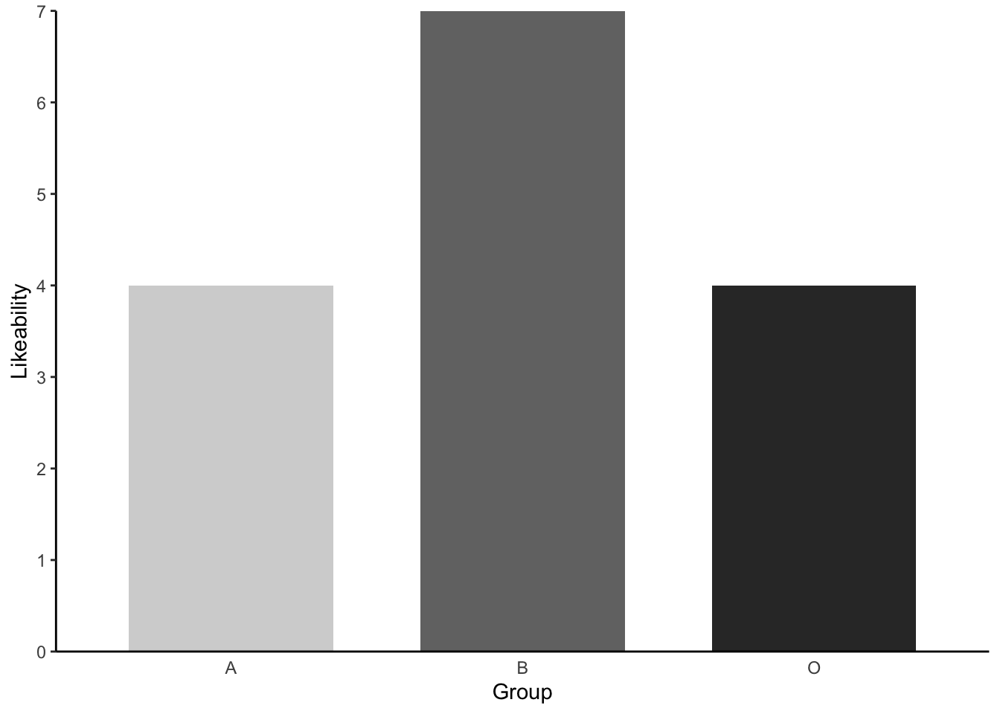
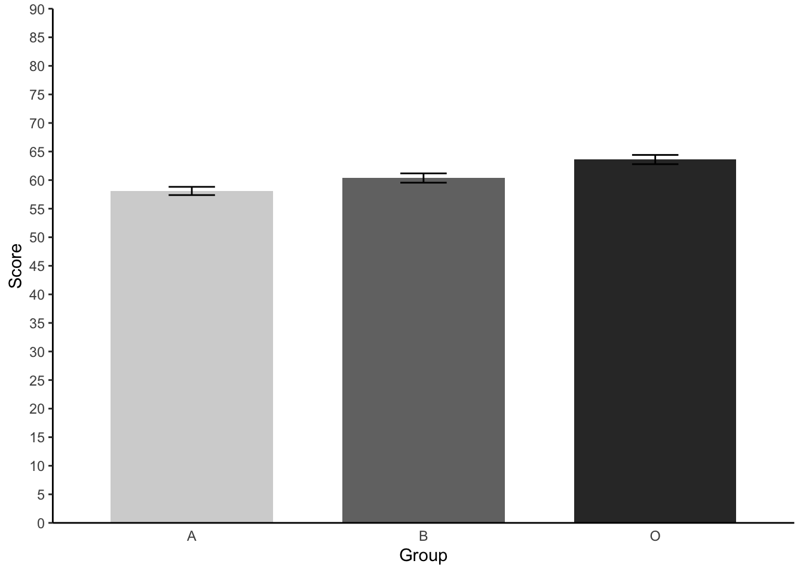

library(tidyverse) # allows pipes, arrang(), summary(), aov(), etc
library(rstatix) # allows group_by()
library(effectsize) # a neat little package that provides the effect size
library(Rmisc) # allows shorthand calculations of standard errors and confidence intervals2. One-Factor Between-Participants ANOVA
Richard Philpot, Mark Hurlstone
Lecture
Watch Part 1 here
Watch Part 2 here
Watch Part 3 here
Watch Part 4 here
Download the lecture slides here, and here for a larger version.
Lab
Welcome back to Lab 2 of Year 2 Stats!
It was incredibly pleasant meeting you last week and also getting snug and reacquainted with our old flame - R. Once again, this week, we will be working from an activity sheet, which outlines a bunch of “fun” tasks to complete in R Studio. The objectives of today’s lab are three fold:
- Describing and wrangling a new and shiny data set
- Running and reporting (to APA standards) a one-factor between participants analysis of variance
- Creating a publication quality bar chart (no pressure), which plots our data
As always, myself (Richard Philpot), Mark Hurlstone (weeks 6-10) and an apt team of GTAs will be on hand to help you through this journey - so please do not panic - you’re never alone. In Psyc214, we also encourage peer engagement and joined problem solving - so please do not hesitate to ask for help from another on your table or to work together in small groups. Right, that enough for now, so let’s get started!💪
1 - General Introduction to Lab 2
“There is no education like adversity” | Benjamin Disraeli.

1.1 Access to R Studio
To get started in R, we first need to ensure that we have R Studio accessible.
You can access Lancaster University’s R Studio Server at http://psy-rstudio.lancaster.ac.uk/. At present, you will need to be on campus, or connected to the VPN to access this. If you do not yet have Eduroam (the university wifi) available on your personal device, please follow the instructions from the Psyc214 Announcement Page https://modules.lancaster.ac.uk/mod/forum/discuss.php?d=437608.

If you are a) on Eduroam (or VPN if off campus), and b) have accessed the R Studio Server from the URL above, you will now see a login screen, a bit like the image above. Please use your normal Lancaster University username (e.g., bloggsj) and your own individual R Studio Server unique password. This was sent in an email last year, prior to your first year 1 stats lab, by Kay Rawlins - email header ‘R Studio Server login details’. Please make sure you have this.
1.2 Loading the packages (dependencies) and loading the data set
Perfect. If you are this far you’re in R Studio - the hot bed of statistical joys.
Similar to last week, we first need to access the dataset.
Step 1. To access today’s dataset, we first just need to download it from here
Now that you have the data saved on your machine, we next need to make a space on our own individual R Studio servers in which to house the data. Like last week, to do this, we first need to create a folder. On the server, please navigate to the bottom right panel (see figure below). Here, under the ‘files’ you will see the option to add ‘New Folder’. Click on this and name the new folder psyc214_lab_2 Note. This needs to be spelled correctly and we need to make sure we that we specify this is lab_2! We roll with the times, and lab_1 is now an artifact :)
Great. You have now created a brand, spanking new folder for week 2’s content. To upload today’s week2_robo_lab.csv file into this folder, please open your new psyc214_lab_2 folder. When in the new folder, select the ‘Upload’ tab (see figure below). This will present a box that will ask where the data is that you want to upload. Click on “Browse…”, find where you have the week2_robo_lab.csv data file on your computer and click ‘OK’
Top work! The data is now chillaxing on your own R Studio server, ready to be called upon.
STOPPPPPPPPP!!!!! We’ll want to be able to save this session on our server: to do so please: click ‘File’ on the top ribbon –> New project. Next, select existing directory and name the working directory ~/psyc214_lab_2 –> hit ’create project
This will now create a project in this week’s R Studio Server lab 2 folder where it will save your progress! You can then return to this at a later date - likely close to the exam wink wink
Like last week, it is important that you work through a script and not through the console. A script is a posh text editor that allows you to write, edit, annotate and save lines of of code. Navigate to the top left pane of RStudio, select File -> New File -> R Script. Working from a script will make it easier to edit your code and you will be able to save your work for a later date.
Be sure to save the script using the File -> Save As….
Let’s start by loading the packages (i.e., the dependencies) we’ll use for this session.
Please copy or type the following commands into R Studio to get these packages activated:
More on these packages later.
Data… Assemble! Ok - Let’s load the data and crack on with today’s work.
- First we need to set the working directory to ‘psyc214_lab_2’, i.e., tell R Studio the location in which today’s data sits, waiting to stand to attention . To recap, the working directory is the default location or folder on your computer or server by which R will read/save any files.
The working directory can be set with the following R code:
setwd("~/psyc214_lab_2")- Great. Now we’re ready to load the dataset which we kindly housed on our server. To do this, please type the following code:
lab2_data <- read_csv("week2_robo_lab.csv")where ‘lab2_data’ is the name we’ve assigned that R will recognise when it calls up our data, read_csv is the R command to pull up the data and “week2_robo_lab.csv” is the name of the data file stored on the server.
Note. During the rest of this session, you will not need to refer to the original downloaded .csv data file. R has all the information stored under the ‘lab2_data’ variable. Further note, you could have called ‘lab2_data’ by pretty much any name you like… ‘my_data’, ‘robo_2’, ‘stat_attack’, etc. - the name is somewhat arbitrary. For the purpose of this lab session and for ease of read, ‘lab2_data’, is perhaps more suitable.
| ## 2 - Today’s lab activities |
|---|
| Signif. codes: 0 ‘’ 0.001 ’’ 0.01 ’’ 0.05 ‘.’ 0.1 ’ ’ 1 1 observation deleted due to missingness ``` ::: |
{.r .cell-code} effectsize(Model_1) # we ask for an eta2 effect size for our model |
| ::: {.cell-output .cell-output-stderr} |
| ::: {.cell-output .cell-output-stdout} ``` # Effect Size for ANOVA |
| Parameter | Eta2 | 95% CI |
Group | 0.56 | [0.50, 1.00]
- One-sided CIs: upper bound fixed at [1.00].
:::
:::
This has provided us with a whole bunch of useful information!
It shows us the between group variability value (do you remember, the numerator value in our F ratio equation from lecture 2?), which R has named the Group Mean Square (a value here of 130.80).
It also provides the within group variability value - aka the error term (do you remember, the denominator in our F ratio equation from lecture 2), which R has named the Residuals mean square (a value here of 0.86)
It provides the crucial F-ratio statistic, here a value of 151.3.
**note, like in lecture 2, you could have calculated this value yourselves by dividing the 130.80 numerator by the 0.86 denominator. Try it in the r console by typing: Note, the value will differ slightly because of rounding - i.e., the number of decimals R works with versus us**
::: {.cell}
```{.r .cell-code}
130.80 / 0.86[1] 152.093:::
The output also shows the Eta-squared (η2) effect size. As a rule of thumb, η2 = 0.01 indicates a small effect; η2 = 0.06 indicates a medium effect; η2 = 0.14 indicates a large effect. Our eta-squared (η2) represents a very large effect - i.e., the effect of our experimental manipulation on the Likeability scores was very large indeed.
3.2 Reporting the results of the one-factor between-participants ANOVA in APA format
All results should be written up in accordance with the American Psychological Association’s (APA) guidance. This ensures that your results are easy to interpret and that all the relevant information is present for those wishing to review/replicate your work.
The current results can be reported as following: “A one-factor between-participants ANOVA revealed that likeability scores were significantly different between our robot groups (Robot A M = 2.50, SD = 0.93; Robot B M = 4.50, SD = 1.01; Robot O M = 2.11, SD = 0.85), F(2,236) = 151.3, p < .001, η2 = 0.56, 95% CI[0.50, 1.00].
Please note. While the ANOVA tells us that there are differences between groups, it doesn’t tell us specifically which groups differ from one another. For example do Group A and B statistically differ? A and O? B and O? The only way to know this definitively is to carry out posthoc/planned contrast tests. We won’t do this today, as this will be a key facet of Lecture 3 and Lab 3, but please be aware that without these supplementary analyses the above APA reporting is incomplete
3.3 Creating an APA barchart
When reporting the results of an ANOVA in an APA report or publication, it is typical to include a barchart, illustrating the average scores and error bars for each group.
As this is a formal chart, it is more sterile and less jazzy than the coloured graphs you have produced before. There are also important APA aesthetics which are required, such as grey colour scales, white background, black axes and text, etc. Before you fall asleep, let’s make one of these posh plots.
Please copy and paste the following code. Please pay attention to the #annotations, which provide detail as to what each line of code is doing:
lab2_data %>% #our dataset
ggplot(aes(x= Group, # specifying our X axis
y = Likeability, # specifying our Y axis
fill = Group)) + # How we will colour our separate bars
geom_col(width = .7, position = position_dodge(.3)) + # width of columns and space between columns
scale_fill_manual(values = c("#D4D4D4", "#737373", "#323232")) + # APA colours for bars - yuck!
scale_y_continuous(expand = expansion(0), # trick to remove space below 0 on y axis
limits = c(0, 7), # set limit of Y axis to 7
breaks = seq(0, 7, 1)) + # set the breaks between yaxis points
theme(panel.background = element_blank(), # removing the default grey background panel
axis.line = element_line(color = "black"), # creating black axes lines
axis.ticks.x = element_blank(),
legend.position = "none") # removing the legend, which is redundantWarning: Removed 1 rows containing missing values (`geom_col()`).
This looks great. But to make it APA publishable we need to add some error bars to our plot. To add things like error bars and 95% Confidence intervals, we first need work out the values of these summary statistics. Luckily, an amazing package called Rmisc will provide these values for us with a simple command.
Let’s make a new dataset for plotting our graphs which will include these values - using the summarySE() function of Rmisc
Like_plot <- summarySE(lab2_data, measurevar="Likeability", groupvars=c("Group"), na.rm = TRUE) #Like_plot is the name of our plot data set and na.rm asks R Studio to ignore our missing data point when calculating there summariesNot let’s view this new data using head()
head(Like_plot) Group N Likeability sd se ci
1 A 80 2.500000 0.9277713 0.10372798 0.2064654
2 B 80 4.500000 1.0063092 0.11250879 0.2239431
3 O 79 2.113924 0.8471270 0.09530923 0.1897461You can see it now gives us a summary of our Likeability data, including the Means, Standard Deviations, Standard Errors and confidence intervals.
Now let’s add the Standard Error Bars to our graph. To do this, we repeat the same plotting code from above, but with two key differences. 1. We need to ensure that we change the dataset for the graph from lab2_data to Like_plot (our new summary data). 2. We add the function geom_errorbar() to specify that we would like to include error bars for our graph.
Like_plot %>% #our dataset
ggplot(aes(x= Group, # our X axis
y = Likeability, # our Y axis
fill = Group)) + # How we will colour our seperate bars
geom_col(width = .7, position = position_dodge(.3)) + # width of columns and space between columns
scale_fill_manual(values = c("#D4D4D4", "#737373", "#323232")) + # APA colours for bars
scale_y_continuous(expand = expansion(0), # trick to remove space below 0 on y axis
limits = c(0, 7),
breaks = seq(0, 7, 1)) + # set limit of Y axis to 7
theme(panel.background = element_blank(), # removing the background panel colour
axis.line = element_line(color = "black"), # creating black axes lines
axis.ticks.x = element_blank(),
legend.position = "none") + # removing the legend, which is redundant
geom_errorbar(aes(ymin=Likeability-se, ymax=Likeability+se, width = 0.2))
Perfect! Error bars accomplished.
4 Further tasks
- We have seen that there are signficant differences between at least two groups when it comes to the Likeability scores. Now please eye ball the means and the barchart and try to predict which groups differed. Talk this over with a lab mate or instructor. We will test this with further analyses next week!
#STUDENT COMPLETES- We have yet to look for statistical differences between in Psyc214 Scores between our groups. Run another one-factor between-participants ANOVA following the instructions above. This time, be sure to replace our previous DV Likeability with our other DV Scores.
#ANSWER CODE
Model_2 <- aov(data = lab2_data, Score ~ Group)
summary(Model_2)#We ask for a summary of this model. This provides F statistic and P value Df Sum Sq Mean Sq F value Pr(>F)
Group 2 1223 611.3 12.52 6.77e-06 ***
Residuals 237 11571 48.8
---
Signif. codes: 0 '***' 0.001 '**' 0.01 '*' 0.05 '.' 0.1 ' ' 1effectsize(Model_2) # we ask for an eta2 effect size for our modelFor one-way between subjects designs, partial eta squared is equivalent
to eta squared. Returning eta squared.# Effect Size for ANOVA
Parameter | Eta2 | 95% CI
-------------------------------
Group | 0.10 | [0.04, 1.00]
- One-sided CIs: upper bound fixed at [1.00].When completely correctly, you should get the following output:
Df Sum Sq Mean Sq F value Pr(>F)
Group 2 1223 611.3 12.52 6.77e-06 ***
Residuals 237 11571 48.8
---
Signif. codes: 0 '***' 0.001 '**' 0.01 '*' 0.05 '.' 0.1 ' ' 1For one-way between subjects designs, partial eta squared is equivalent
to eta squared. Returning eta squared.# Effect Size for ANOVA
Parameter | Eta2 | 95% CI
-------------------------------
Group | 0.10 | [0.04, 1.00]
- One-sided CIs: upper bound fixed at [1.00].- Report this second ANOVA to APA standards following example above (3.2)
#STUDENT COMPLETES- Repeat the steps 3.3 and again create an APA standard barchart - this time plotting our three different groups and their Psyc214 Scores. Please finish this off with error bars. *Hint for the error bars - you will need to create a new ‘Scores_plot’ sub data set using the summarySE() function.
Scores_plot <- summarySE(lab2_data, measurevar="Score", groupvars=c("Group"), na.rm = TRUE) #Like_plot is the name of our plot data set and na.rm asks R Studio to ignore our missing data point when calculating there summaries
Scores_plot %>% #our dataset
ggplot(aes(x= Group, # our X axis
y = Score, # our Y axis
fill = Group)) + # How we will colour our seperate bars
geom_col(width = .7, position = position_dodge(.3)) + # width of columns and space between columns
scale_fill_manual(values = c("#D4D4D4", "#737373", "#323232")) + # APA colours for bars
scale_y_continuous(expand = expansion(0), # trick to remove space below 0 on y axis
limits = c(0, 90),
breaks = seq(0, 90, 5)) + # set limit of Y axis to 7
theme(panel.background = element_blank(), # removing the background panel colour
axis.line = element_line(color = "black"), # creating black axes lines
axis.ticks.x = element_blank(),
legend.position = "none") + # removing the legend, which is redundant
geom_errorbar(aes(ymin=Score-se, ymax=Score+se, width = 0.2))
- Again, try to think which groups may significantly differ from one another by eyeballing the means and barchart information. We will confirm this all next week.
#STUDENT COMPLETES- Before you finish, make sure you save a copy of the script that you have been working on by the end of the session. This provides you with the record - the digital trace - on what you have done. And it means you can come back and repeat any of the work you have performed.
Please end your session on the RStudio server, this logs you out of the server and stops any ongoing activities and tasks you have set up, maybe in the background.
- …………………. Now breathe! You’ve rocked it!!!

Lab Feedback (voluntary)
This is a voluntary, super fast survey, just to gauge how you found the difficulty of the content and any additional feedback.